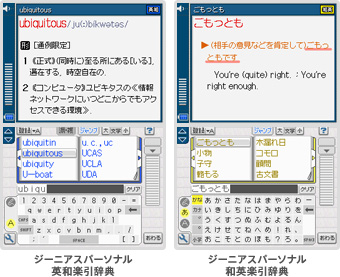
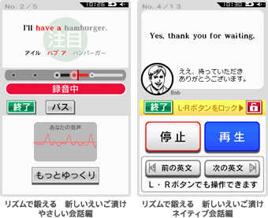

英語の学習は、読んで、書いて、声に出すことが基本です。DSiウェアなら、この３つ、すべてをインタラクティブに行うことができます。もちろん、いつでもどこでも手軽に持ち運べて、楽しく続けられるというのも、DSiならではの大きなメリットです。

重たい辞書も手軽に持ち歩ける
『ジーニアスパーソナル英和楽引辞典』と『ジーニアスパーソナル和英楽引辞典』は、タッチペンで単語の英訳、あるいは和訳を調べることができるソフトです。新語や口語的表現も含めた8万9千語（英和）、6万9千語（和英）を収録しています。
アルファベット・かな文字・カタカナは、タッチパネルに直接書き込むか、50音・英数のパネルから簡単に入力することができます。文字の表示サイズは見やすく設定変更できるほか、調べた語句を登録しておき、あとからまとめて確認できる「しおり」の機能なども搭載しているので、英語学習の強い味方になるでしょう。
また、英和／和英ともに、世界地図上でタッチした国や地域の現在時刻を表示する「ワールドクロック」を搭載しています。海外旅行中に日本に電話をしたい時や、海外に住んでいるお友達に直接連絡したい時などに便利です。
普段の学習はもちろん、かさばる辞書を海外などでも常に携帯しておきたいという目的にも使えるでしょう。
©KONISHI Tomoshichi,MINAMIDE Kosei & Taishukan,2008-2010
©2010 Nintendo

英語の発音とリズムを判定
DSiに搭載されているマイク機能を活用して、実際に英語を声に出すレッスンを行えるソフトです。まず発音のお手本をよく聴いて、それを真似しながら声に出すことからはじめましょう。ソフトが発音やリズムを判定してくれるので、上達の度合いがわかり、楽しく練習できます。
また、海外での実際の日常生活に役立つ会話のフレーズがふんだんに散りばめられた、ドラマ仕立てのストーリーを全25話収録しています。1日に1話ずつでも手軽に進められますし、お話の続きが気になるので、継続して学習しやすくなっています。
なお、外出先で声を出すレッスンができない時には、イヤフォンがあれば、英文の聞き取り練習や、一度トレーニングした会話をくり返してリスニングするといったレッスンが可能です。
単語の難易度や会話の速度など、自分のレベルに合わせて「やさしい会話編」と「ネイティブ会話編」の2種類から選べます。目と手と口をフル活用したレッスンは、使える英語力の習得に大いに役立つことでしょう。
©2009 Nintendo ©2009 Plato